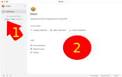

Browser
La maggior parte dei browser ha degli strumenti per ispezionare la richiesta e la risposta http, qui vedremo quelli di Firefox accessibili dal menu "/sviluppo/attiva strumenti".
In particolare a noi interessa la scheda "Rete" nella quale sono accessibili molte informazioni che riguardano la comunicazione.

Quella qui sopra è la richiesta di una singola pagina che origina poi altre due ulteriori richieste, il primo numero sulla sinistra è il codice di risposta fornito dal server per ogni richiesta.
Facendo click su una singola richiesta si apre un ulteriore pannello che divide in due l'area delle informazioni e che contiene i dati della richiesta specifica. Sulla destra c'è un pulsante "Header non elaborati (raw)" che mostra gli header così come sono stati inviati/ricevuti.
Le informazioni contenute nella prima riga della richiesta e della risposta (più alcune aggiuntive) sono mostrate nella parte alta del pannello.
Bruno
Bruno è un programma che permette di svolgere test sulle comunicazioni HTTP: inviare una richiesta e vedere cosa risponde il server.

Una volta avviato il programma si presenta come una schermata sostanzialmente vuota, basta fare click su [1] (Create) per creare una vuova cartella che conterrà i test: nella finestra di dialogo che si apre bisogna indicare il nome della cartella e la posizione in cui salvarla.
Una volta creata la cartella comparirà il suo nome sempre nell'area grigia sulla sinistra, a questo punto andando sopra il nome della cartella comparirà alla sua destra un menu "⋯" da cui sarà possibile creare nuove richieste da inviare al sewrver.